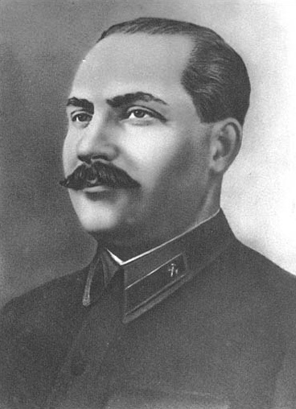

Каганович Л.М.
Каганович Лазарь Моисеевич
Советский государственный и партийный деятель, близкий сподвижник Сталина, многие годы занимал руководящие посты в Советском государстве.
10(22).11.1893 – 25.07.1991
Каганович родился в семье прасола Моисея Гершковича Кагановича в д. Кабаны Радомысльского уезда Киевской губернии (теперь — с. Диброва Полесского района Киевской области). С 14-ти летнего возраста начал работать в Киеве на разных заводах, обувных фабриках и сапожных мастерских сапожником. Одно время был грузчиком на мельнице «Лазарь Бродский», откуда был уволен вместе с группой из примерно 10 молодых грузчиков за организацию акций протеста перед администрацией предприятия. Под влиянием старшего брата Михаила, вступившего в ряды большевиков ещё в 1905 г., Лазарь в 1911 г. стал членом РСДРП(б). С 1914 по 1915 г. — член Киевского комитета партии. В 1915 г. был арестован и выслан этапом на родину, но вскоре вернулся нелегально в Киев. В 1916 г. был организатором нелегальных Союзов сапожников последовательно в Екатеринославе (Днепропетровске), Мелитополе и Юзовке (Донецке), работая на обувных фабриках. В Мелитополе и Юзовке был руководителем организованных им большевистских групп.
С начала Февральской революции 1917 г. был руководителем Юзовского комитета партии и заместителем председателя Юзовского совета рабочих депутатов. С мая 1917 г., находясь на военной службе, председатель Саратовской военной большевистской организации, член Саратовского комитета партии большевиков, член солдатского комитета учебной команды и член исполкома Совета рабочих и солдатских депутатов. В июне делегирован на Всероссийскую конференцию большевистских военных парторганизаций, на которой избран членом Всероссийского бюро военных партийных организаций при ЦК РСДРП(б). Арестовывался за большевистскую пропаганду. Перебрался в Гомель, где с сентября 1917 г. работал председателем Полесского комитета партии большевиков, был членом исполкома и членом правления Союза кожевенников.
Активный участник революции 1917 г. — руководил Октябрьским восстанием в Гомеле. На выборах в Учредительное собрание прошел по большевистскому списку. В декабре 1917 г. Каганович стал также делегатом III Всероссийского съезда Советов. На съезде Советов Каганович был избран во ВЦИК РСФСР. С января 1918 г. работал в Петрограде. Вместе с другими членами ВЦИК весной 1918 г. перебрался в Москву, где стал комиссаром организационно-агитационного отдела Всероссийской коллегии по организации Красной Армии. В конце июня 1918 г. послан ЦК РКП(б) в Нижний Новгород, где был агитатором губкома, зав. агитотдела, председателем губкома и губисполкома. Коммунар ЧОН. В сентябре 1919 г. был командирован на воронежский участок Южного фронта. После взятия Воронежа Красной Армией — председатель Воронежского губревкома, а затем губисполкома. В сентябре 1920 г. послан ЦК РКП(б) в Среднюю Азию членом Туркестанской комиссии ВЦИК и СНК — член Туркестанского бюро ЦК РКП(б) и одновременно один из руководителей Реввоенсовета Туркестанского фронта, нарком РКИ Туркестанской республики и председатель Ташкентского горсовета.
В 1921 г. работал инструктором ВЦСПС, инструктором и секретарём Московского, а потом и Центрального комитета союза кожевенников. В начале 1922 г. был командирован ЦК партии в Туркестан членом Туркестанского ЦК РКП(б). В 1922 г. Лазарь Каганович назначен заведующим организационно-инструкторским, ставшим впоследствии организационно-распределительным отделом ЦК РКП(б). На XII Съезде избран кандидатом в члены ЦК РКП(б), а с XIII — членом ЦК РКП(б) . С 1924 по 1925 г. — секретарь ЦК РКП(б).
Первая половина 30-х годов — время наибольшей власти Кагановича. В начале 1930 г. Каганович стал первым секретарем Московского областного, а затем и городского комитетов партии, а также полноправным членом Политбюро ЦК ВКП(б). Как секретарь ЦК и заведующий сельскохозяйственным отделом ЦК в 1929—1934 гг. непосредственно руководил «делом организационно-хозяйственного укрепления колхозов и совхозов и борьбой против организованного кулачеством саботажа государственных мероприятий». В 1933 г. он возглавил созданный сельскохозяйственный отдел ЦК ВКП(б) и активно руководил организацией МТС в колхозах и совхозах. В качестве председателя Центральной комиссии по чистке партии руководил проходившей в 1933-34 гг. «чисткой партийных рядов». После XVII Съезда в 1934—1935 гг. председатель Комиссии партийного контроля при ЦК ВКП(б).
В этот же период (1934 г.) Каганович — по совместительству — стал также руководителем Транспортной комиссии ЦК ВКП(б). 28 февраля 1935 г. Сталин назначает Кагановича на должность наркома путей сообщения, сохраняя за ним пост секретаря ЦК; однако он теряет два других важнейших поста — первого секретаря Московского комитета партии и председателя Комиссии партийного контроля при ЦК ВКП(б). За перевыполнение плана железнодорожных перевозок и за успехи в деле организации ж-д транспорта и внедрения трудовой дисциплины награждён в январе 1936 г. орденом Трудового красного знамени. Имя Кагановича в 1935—1955 гг. носил Московский метрополитен, а затем, до 1957 г., станция «Охотный ряд»; первый советский троллейбус имел в его честь марку «ЛК».
С 1937 г. по совместительству — нарком тяжёлой промышленности, с 1939 г. — нарком топливной промышленности, с 12 октября 1939—1940 гг. — первый нарком нефтяной промышленности СССР. С августа 1938 года одновременно — заместитель председателя Совнаркома СССР.
В 1935 г. Каганович непосредственно руководил работой по составлению генерального плана реконструкции Москвы и ее архитектурного оформления. Возглавлял строительство первой очереди Московского метрополитена. Он привлек Н.С. Хрущева к работе в Москве. Роль Кагановича в реконструкции Москвы исключительно велика — он лично давал указания архитекторам, проводил с ними собрания. Во время реконструкции было снесено множество памятников архитектуры, находившихся в Москве. При нем был взорван Храм Христа Спасителя, но, несмотря на расхожее мнение, инициатива принадлежала не самому Кагановичу, а Союзу архитекторов.
22 октября 1932 г. Политбюро по инициативе Сталина приняло решение о создании на Украине и Северном Кавказе чрезвычайных комиссий для увеличения хлебозаготовок. Комиссию по Украине возглавил Молотов, по Северному Кавказу — Каганович, однако фактически он участвовал и в работе комиссии Молотова как заведующий отделом сельского хозяйства при ЦК ВКП(б). Вскоре Каганович выехал на Северный Кавказ. В ходе борьбы с «саботажем» только за полтора месяца (с 1 ноября по 10 декабря) на территории Северо-Кавказского края было арестовано 16 864 человека «кулацкого и антисоветского элемента». Не ограничившись этим, Каганович осуществил такую меру, как практически поголовное выселение жителей некоторых станиц, не справлявшихся с планом госпоставок, «в северные области». Только из трех станиц — Полтавской, Медведовской и Урупской — было выселено 45 600 человек из 47 500.
В своем докладе на февральско-мартовском пленуме ЦК ВКП(б) 1937 г. Каганович высказался за необходимость новых репрессий как в наркомате путей сообщения, который он возглавлял, так и в советском обществе в целом. Подпись Кагановича стоит на 189 списках, по которым были осуждены и расстреляны более 19 000 человек.
В 1942 г. Каганович был членом Военного совета Северо-Кавказского, а затем Закавказского фронтов. По поручению Ставки участвовал в организации обороны Кавказа. В 1942—1945 гг. Каганович был членом Государственного Комитета Обороны. После войны Каганович стал терять доверие вождя. После XIX съезда КПСС Каганович был избран в состав расширенного Президиума ЦК и даже в Бюро ЦК, но не вошел в отобранную лично Сталиным «пятерку» наиболее доверенных руководителей партии. После смерти Сталина влияние Кагановича на короткое время вновь возросло. Как один из первых заместителей Председателя Совета Министров СССР он контролировал несколько важных министерств. Каганович поддержал предложение Хрущева и Маленкова арестовать и устранить Берию. Еще раньше он активно поддержал все меры по пересмотру «дела врачей» и прекращению антисемитской кампании в стране. Был реабилитирован и его старший брат М. М. Каганович.
В 1957 г. был объявлен членом «антипартийной группировки Молотова — Маленкова — Кагановича», снят со всех постов. После июньского Пленума 1957 г. Каганович опасался ареста и боялся, что его постигнет судьба расстрелянного Лаврентия Берии. Но репрессий в его отношении не последовало, он был направлен в Свердловскую область управляющим трестом Союзасбест. В декабре 1961 г. он был исключён из КПСС. Несмотря на многочисленные прошения, не восстановлен в партии (в отличие от Молотова). Однако имел ранг персонального пенсионера союзного значения и соответствующие этому статусу привилегии. Умер 25 июля 1991 г. в возрасте 97 лет. Тело было кремировано, и урна с прахом была захоронена на Новодевичьем кладбище.
| Исаев П.С.< Предыдущая | Следующая >Калинин М.И. |
|---|